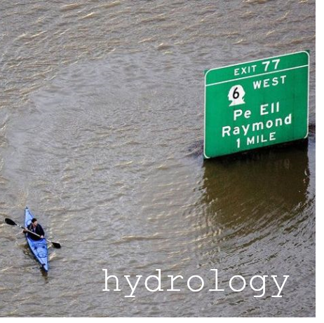
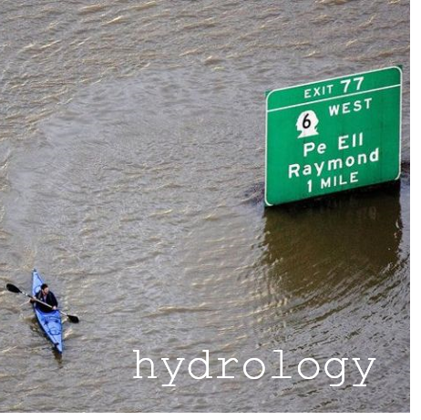

USACE Seattle District Weather/Hydro/Climate Resources
Mark Stoelinga, Res. Phys. Scientist, ERDCMeteorologist, Water Management
(based on Original Web Site by Mike Warner, former Meteorologist in HH&C Eng.)
 
 
Last modified: Tue 08 Jan 2019